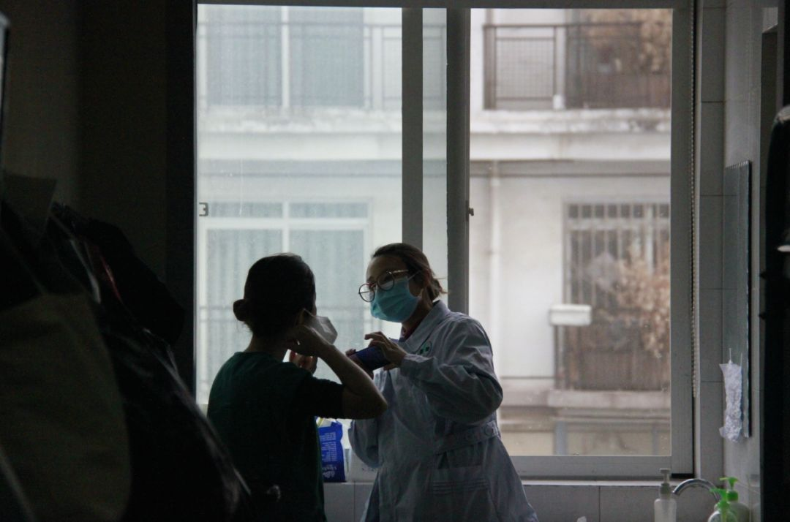

在人间丨我在武汉协和西院的30天
原文链接 备份链接 凤凰新闻客户端 凤凰网在人间工作室出品 我是北京日报摄影记者和冠欣，1月27日，我跟随援鄂北京医疗队来到了武汉，走上了抗击新冠肺炎的战场。昨天，2月25日，是我到武汉的第30天。 援鄂北京医疗队来到武汉后，在武汉协和 …

3月4日，武汉市红十字会医院，两名刚刚结束工作的医护人员。中青报 中青网记者 王嘉兴/摄
本文约1672字
预计阅读时间5分钟
作者 | 中青报·中青网记者 王嘉兴
编辑 | 张国
新冠肺炎疫情发展至今，武汉多家医院转为发热患者定点医院已有40余天。记者最近走访这些医院时，听到多名医护人员建议，要对持续奋战时间长的医护人员优先安排轮休，为“打胜仗”积蓄能量。这些人员经过长期高强度工作，身心健康都已严重透支。
“我们一直在高负荷、疲劳的状态下持续作战。”四川省第二批援助湖北医疗队领队黎旭说。1月28日，他和队员抵达武汉，支援武汉市红十字会医院。他告诉记者，不管是红十字会医院本院职工，还是陆续抵达的医疗队队员，都很少休息。直到最近一周，才有部分人员一周有一到两天休息时间。
疫情暴发以来，武汉市红十字会医院收治了大量患者，最近一段时间住院病人数仍然处在高位。黎旭估算，即使不考虑轮休，医护人员数量都有数百人的缺口。
此外，武汉市红十字会医院收治的病人年龄整体也偏大，不少患者没有生活自理能力，护理任务繁重。疫情暴发以来，医院的护工及后勤人员减少很多，一些医护人员不得不承担护工、保洁等工作，加重了工作负担。
武汉市红十字会医院的情况不是孤例。记者采访中了解到，定点支援武汉金银潭医院的部分外地医疗队也一直没有轮休。武汉市第五医院一名医生告诉记者，医院一直没有安排轮休，甚至一周两天的休息时间也无法保障。直到上周，一些病休的同事返岗位，才安排部分医护人员休息了2天。
2月10日，国家卫健委、人力资源和社会保障部、财政部出台《关于改善一线医务人员工作条件切实关心医务人员身心健康的若干措施》，提出要根据疫情防控实际，科学测算医务人员工作负荷，合理配置医务人员，既满足医疗服务需求，又保障医务人员休息时间。国家卫健委副主任曾益新曾表示，前方医护人员工作重，休息条件有限，心理压力大，感染风险高。
3月5日，武汉全天新增确诊病例126例，现有确诊病例20115例，疫情比高峰时大有缓解。
3月6日，中央指导组成员、国务院副秘书长丁向阳介绍，湖北迄今有超过3000名医护人员感染新冠肺炎，其中40%是在医院感染的，60%在社区感染。
2月18日，湖北省人民政府《关于进一步关爱和激励新冠肺炎疫情防控一线医务人员的若干措施》提出：“在方舱医院或一般定点医院工作的一线医护人员，原则上连续工作时间不得长于一个月；在重症救治定点医院的一线医护人员，连续工作时间可适当缩短。”
武汉市中心医院呼吸内科一名医生告诉记者，自己从1月18日至今没有轮休过。科室安排过部分人轮休，但包括他在内，一些医护人员一直没有休息，也不知道什么时候能休息。他理解现在的情况，“我们负责的病人没有减少，总不能不管病人。每个科室都上了，科室主任也都顶在一线没有休息。”
另一位武汉一线医护人员称，他所在的科室一直没有轮休。他连续工作一个月后，因身体不适向科室主任提出轮休申请，但被告知，申请休息要走请假流程。本周，他和几名同事终于休息了几天，算是“补休”——补了1月20日以来失去的部分休息时间。
黎旭认为，要实现医务人员轮休，就需要统筹医疗资源，整合所有医疗队力量。他告诉记者，就人手紧张、医护人员需要轮休的情况，他于3月1日向国家卫健委提出了支援请求，已有相关部门统筹协调。他理解，现在各地医疗资源紧张。目前，四川累计已向湖北派出10批医疗队、3批疾控队以及国家单独抽调的2名院感专家，共计1459人。
国家卫健委医政医管局副局长焦雅辉此前表示，外地援助医疗队轮换休整方案已开始实施，共三种模式，分别为医疗队内部轮换、整建制轮换和重新编组。据报道，已有福建、山东、云南、河北等地援助湖北的医疗队在工作月余后陆续轮休，甘肃援助湖北医疗队安排医生工作1天休息1.5-2天，护士工作1天休息2.5-3天。
中国青年报·中国青年网出品
微信编辑 | 陈轶男

觉得好看请点这里
原文链接 备份链接 凤凰新闻客户端 凤凰网在人间工作室出品 我是北京日报摄影记者和冠欣，1月27日，我跟随援鄂北京医疗队来到了武汉，走上了抗击新冠肺炎的战场。昨天，2月25日，是我到武汉的第30天。 援鄂北京医疗队来到武汉后，在武汉协和 …
原文链接 备份链接 24.02.2020本文字数：3380，阅读时长大约6分钟 导读：全国各地驰援力量也投入到了帮助武汉爬坡跨坎的大战之中。 作者 | 第一财经 吴绵强 2月20日晚上，在武汉江夏区方舱医院隔离的每一位患者都收到了一颗“ …
原文链接 备份链接 摘要：截至2月17日，全国已有3.2万余名医护人员支援湖北，支持湖北实现“应收尽收、应治尽治”。2月7日，其中一支医疗队的领队、复旦大学附属中山医院副院长朱畴文率领的136人队伍奉调入鄂，一天后接管了武汉大学人民医院东 …
原文链接 [备份链接]() *************▲ *************2020年2月19日，在武汉市泰康同济医院，军队医护人员互相整理防护服。 （新华社/图） 全文共9028字，阅读大约需要20分钟。 此次派出的县级医院 …
原文链接 备份链接 病人激增过程中，医护人员感染的情况开始出现。武汉市中心医院是当地27家三级甲等医院之一，官网显示，该院职工总数有4300多人。其前身为汉口天主堂医院，有140年的历史，主要有后湖和南京路两个院区，均位于汉口，两者相距五 …